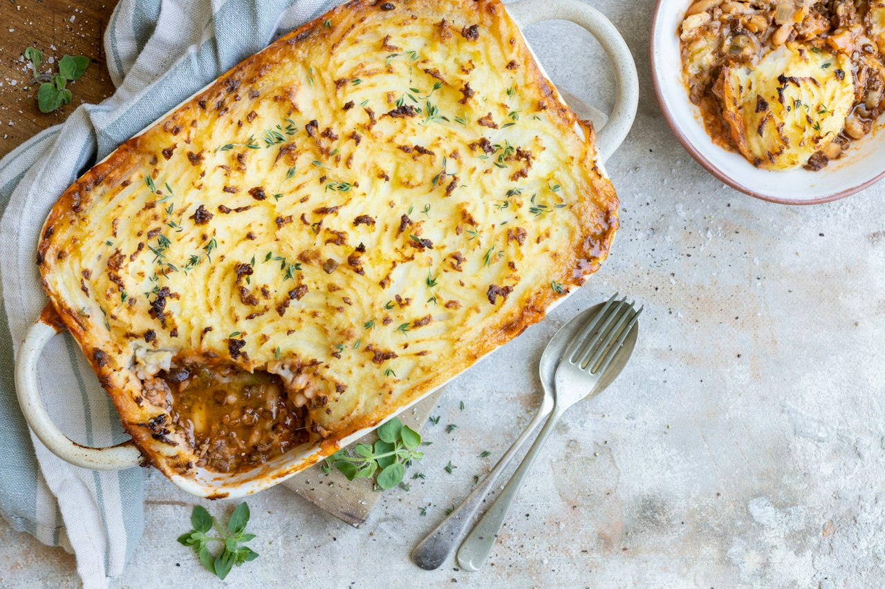

Mexican Cottage Pie
A Mexican-inspired twist on the British classic — birria-spiced ground beef under a jalapeño cheddar mash. Baked in cast iron until the peaks go crispy.
Mexican · Dinner · Comfort Food · Meal Prep

Per serving
700kcal
40gprotein
Makes 4 servings. Whole batch: 2800 kcal, 160g protein.
Ingredients
- Filling
- Mash
Steps
- Peel and cube potatoes. Add to cold salted water, bring to boil, cook until fork tender.
- Heat olive oil in a large oven-safe skillet over medium-high. Cook onion and garlic until softened, about 3 min.
- Add ground beef, break up, and brown fully. Season with salt and pepper.
- Add tomato paste and cook into the meat for 1 minute.
- Add birria seasoning packet, Worcestershire, and beef stock. Simmer until liquid reduces into a thick gravy. Taste and adjust salt.
- Drain potatoes and mash well. Add cream, olive oil, chipotle mayo, and mash until smooth.
- Fold in both cheeses and pickled jalapeños. Taste — it should be well seasoned and a little spicy.
- Spoon mash over the beef filling and spread to the edges. Fork up the surface to create peaks.
- Bake at 400°F until the top is golden and crispy in spots.
- Rest 5 minutes before serving.
Cook's notes
The birria packet does most of the seasoning heavy lifting — taste the filling before adding extra salt. The chipotle mayo in the mash is not in the original recipe but is the move — adds smokiness and richness that ties the whole thing together. Serve with Lime Sesame Toom Vinaigrette over baby spinach to cut through the richness. Leftovers reheat very well.